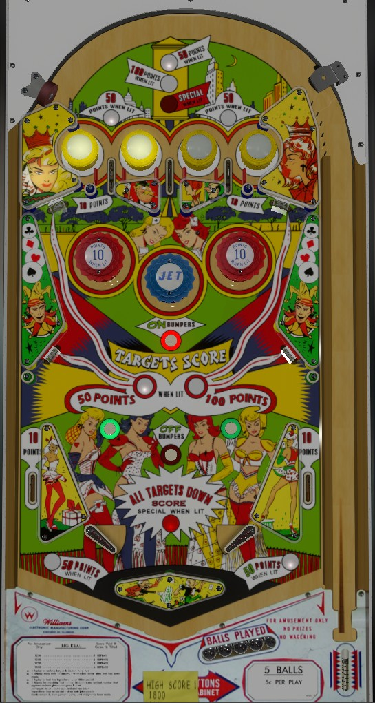

This is a single player game that is not to be confused with Big Deal (Williams, 1977), a 4-player game with a more conventional flipper layout.
Either the left or right top lane is always lit, and they alternate based on 1-point switch hits. These lanes score 10 points, or 50 when lit. The center top lane has a default value of 50 points, which increases to 100 or Special after 1 or 2 completions of the drop targets, respectively. Passive bumpers score 1 point whether lit or not, and their lights only serve to help indicate whether the left or right top lane is lit.
There are 4 solo drop targets around the game: one each above-left and above-right of the pop bumpers, and one each in the lower left and lower right. Drop targets usually score 50 points each, but every 10th 1-point switch hit will increase the drop target value to 100 points until another 1-point switch is scored. Knocking down all 4 drop targets lights one card in the royal flush on the backglass and increases the value of the center top lane in the sequence 50 points - 100 points - Special. The backglass cards are a carryover award; when the royal flush is completed, all further completions of the drop targets for the rest of that game award a Special, and the royal flush sequence will reset for the next game.
Pop bumpers score 1 point. The On Bumpers rollover button scores 1 point and lights one of the red pop bumpers for 10 points; which bumper is lit alternates with 1-point switch hits. The Off Bumpers rollover closer to the flippers reverts the red pop bumpers to where both are off.
The flippers are extremely far apart with a wide diamond-shaped rubber below them. Use nudging liberally to bounce the ball of the large diamond so that it can access the flippers. Slingshots score 1 point. Out lanes score 10 points or 50 when lit; one out lane is lit at a time, alternating based on 1-point switch hits.
There is no extra ball feature or end of ball bonus. Tilt ends game.
The below picture of Big Deal's playfield was taken from the VPX recreation by Loserman76.
